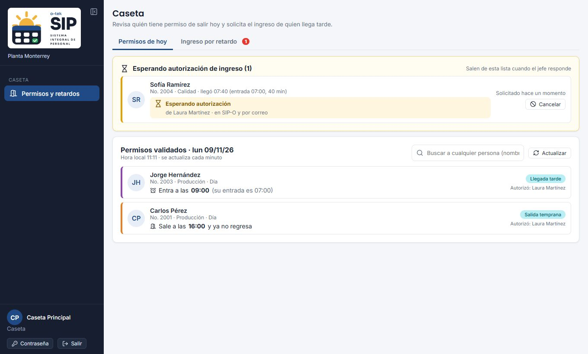
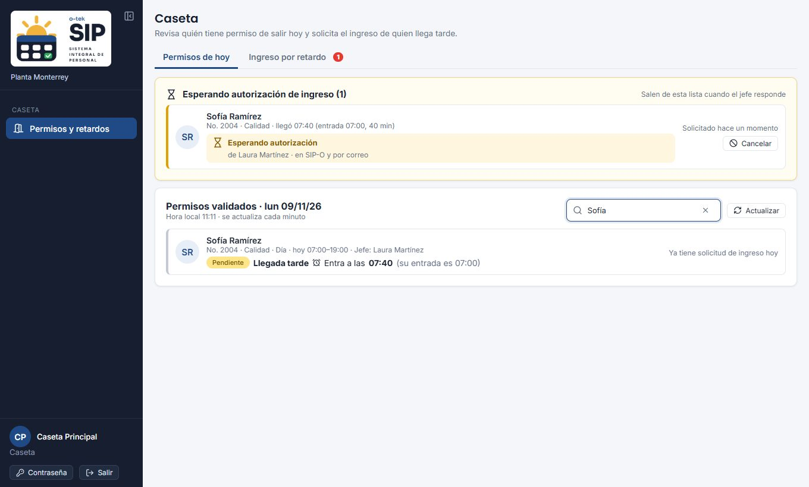
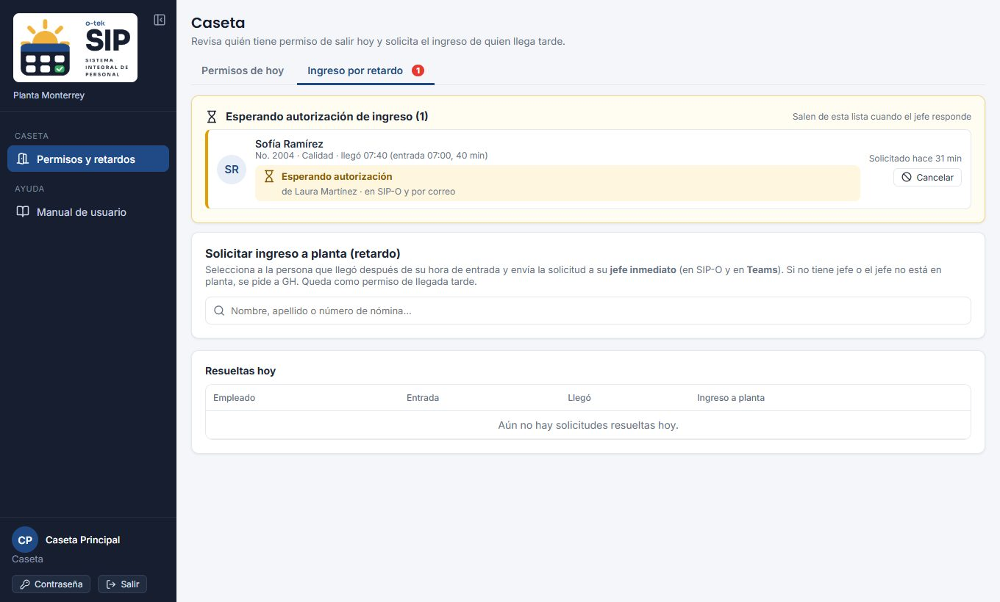

01Entrar
Abre https://sip-o.otek.internal y entra con tu número de nómina o tu correo personal y tu contraseña. Si es la primera vez, GH te da una contraseña temporal y SIP-O te pide crear la tuya.
Al entrar se abre directamente Caseta. Es tu único apartado: no pides vacaciones ni permisos en SIP-O.
La hora de llegada se llena con la hora de la computadora de caseta. Verifica que esté bien configurada.
02Permisos de hoy
Muestra los permisos autorizados del día en tu sede, con foto, nómina, departamento, turno y quién autorizó:

| Permiso | Qué esperar en la puerta |
|---|---|
| Llegada tarde | Entra a la hora indicada (se muestra también su entrada normal). |
| Salida temprana | Sale a la hora indicada y ya no regresa. |
| Salida durante la jornada | Sale y regresa a las horas indicadas. |
| Fuera de planta todo el día | Home office u otros permisos por días: no debe estar en planta. |
La lista se actualiza sola cada minuto; también puedes pulsar Actualizar.
Buscar a cualquier persona
Escribe nombre, apellido o nómina (sin importar acentos). Aparece cada persona de la sede con su horario de hoy, su jefe (si no tiene jefe directo, los jefes de su área o grupo) y su situación: Sin permisos hoy, o cada permiso como Autorizado o Pendiente. Desde ahí puedes pulsar Solicitar ingreso.

03Salidas de equipo de cómputo
La salida de equipo ahora es un permiso más: Salida de equipo. Cuando está autorizado aparece en Permisos de hoy (en Fuera de planta todo el día, por ser un permiso por días) con quién autorizó; el motivo indica el equipo. Si alguien quiere sacar un equipo sin ese permiso autorizado, pídele que lo solicite en SIP-O.
04Solicitar ingreso por retardo
Si alguien llega después de su hora de entrada sin un permiso autorizado, pide a su jefe que autorice su ingreso:

- Pulsa Solicitar ingreso junto a la persona en Permisos de hoy, o búscala en la pestaña Ingreso por retardo. Verás su entrada de hoy y su jefe.
- Revisa la hora de llegada (se llena con la hora actual) y los minutos de retardo. Si quieres, escribe el motivo que te dé la persona.
- Si su jefe no está en planta, marca El jefe inmediato no está en planta: enviar a GH. Si no tiene jefe, va a GH automáticamente.
- Pulsa Enviar solicitud de ingreso. El jefe (o GH) la recibe en Teams, por correo y en SIP-O.
No se puede enviar si la hora no es posterior a su entrada, si no tiene turno o si ya tiene una solicitud de ingreso hoy.
05Esperar la respuesta
Arriba, en las dos pestañas, aparece Esperando autorización de ingreso con cada persona, su hora de llegada, a quién se le pidió y cuánto lleva esperando. La pestaña muestra un círculo con cuántas esperan. Se revisa cada 15 segundos.
| Respuesta | Qué ves | Qué hacer |
|---|---|---|
| ACCESO AUTORIZADO | Aviso verde con quién autorizó y su comentario. Sale de pendientes y pasa a Resueltas hoy. | Deja pasar a la persona. |
| ACCESO DENEGADO | Aviso rojo con quién lo negó y el motivo. Pasa a Resueltas hoy. | No la dejes pasar; sigue el procedimiento de la planta. |
| Esperando | Sigue en pendientes; indica si ya se envió a Teams. | Espera. Si tarda, avisa a GH o al jefe por teléfono. |
Si el jefe negó desde Teams sin escribir el motivo, el acceso queda denegado de inmediato y el motivo aparece cuando lo capture.
06Corregir un error
Si registraste a la persona equivocada o una hora incorrecta, pulsa Cancelar en la tarjeta mientras siga esperando y vuelve a registrarla. Una vez que el jefe respondió, solo él o GH pueden cancelarla.
07Preguntas frecuentes
No encuentro a la persona.
Prueba con un apellido o la nómina. Solo aparecen empleados activos de tu sede. El médico de planta y caseta no tienen permisos en SIP-O.
Dice que no tiene turno.
Sin turno no se puede calcular el retardo. Pide a GH que le asigne uno.
Su jefe no responde.
Si el jefe no está en planta, cancela la solicitud y vuelve a enviarla marcando “enviar a GH”, o comunícate con GH.
Llegó con un permiso de llegada tarde.
Búscala en Permisos de hoy: si aparece Autorizado, no necesitas pedir ingreso.